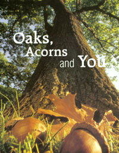

Oaks, Acorns And You
October/November 2003
Issue # 200- October/November 2003
MOTHER's Nature
Jerry Krautwurst
Magnificent oak trees and their acorns sustain countless wild creatures.
BLAM! BONK-BLAM! BLAM! For days on end at our house, this is early autumn's tune-a slow, staccato solo for pickuptruck percussion in A (for annoying) minor. No matter where I move my truck in our tree-covered driveway it sits beneath an oak, and acorns come raining down on it like oversized hailstones on a tin roof.
As startling as each resounding impact is to me, it must be a truly jarring experience for the little weevil larva curled inside the meat-filled shell. By summer's end many acorns carry the larvae, one to a nut, deposited as eggs in tiny pinholes drilled by feeding adult weevils. The jolt of an acorn's fall to the ground signals to the larva that the time has come to bore its way out of the shell. Once hatched, the larva burrows as much as a foot deep into the soil, where it remains for up to five years before pupating and emerging as a full-grown acorn-sucking beetle. The slam against unforgiving truck metal has to be a whole different kind of wake-up call.
Equally as eye-opening to biologists and ecologists, though, is the reverberating environmental impact of acorns-the countless billions that land with a gentle thud, and a collective bang, on soil and leaf litter from coast to coast. Scientists are only beginning to unravel the extraordinarily complex interplay between plants, wildlife and acorns in woodland ecosystems.
IN A NUTSHELL
Like other nuts, an acorn is a seed, an embryonic tree-to-be wrapped in a hard shell. But only the lower end of an acorn's innards is occupied by a rudimentary root and stem; the rest is nutritive tissue loaded with protein, carbohydrates and fat. Its purpose is to sustain a sprouting seedling until the infant grows green leaves and can stock its own larder via photosynthe sis. But far more often than not, a forest creature gobbles the nut and its stored nutrients first.
Upwards of 100 species of birds and animals include acorns in their diets. For many-including gray squirrels, blue jays, black bears, chipmunks, ruffed grouse and deer mice-nuts are the main food source, a critical element of day-to-day survival. For many more, acorns are a lifeline to spring and beyond. Without the benefit of the nuts' energy, those birds and animals will starve or fail to reproduce successfully.
Fortunately, the United States is blessed with roughly 58 species of native oaks. I say roughly because many oaks readily hybridize, producing pesky crosses that feed the fires of the ongoing debate among biologists over what, precisely, makes a species a species. Scientists will likely never agree on the exact number of different oaks. Regardless, they all produce acorns. The nuts range from peasize (willow and pin oaks) to whopping jawbreaker-size (bur and white oak). In a good year, one tree can produce thousands of acorns, and an acre of oak woodland can yield a quarter-ton or more of nuts. And there, in a nutshell, is an important environmental catch: not all years are good years.
NUT BOOM AND BUST
Mast refers to fruits and seeds of trees and shrubs. Wildlife biologists distinguish two types of mast: hard and soft. Soft mast includes pine seeds and fruits from vines, shrubs and small trees-persimmon, dogwood, grape, blackberry, and the like. Soft mast is used by wildlife primarily during the summer and fall. Hard mast consists of nuts. This includes beech, hickory, walnut and others, but acorns are by far the bulk of the hard-mast crop. Some scientists say oaks produce more nuts annually than all other kinds of nut trees combined-both wild and commercial.
The hard-mast crop is hardly consistent, though, from year to year. Instead, it follows a boom-and-bust cycle. Bumper crops seldom occur back to back, and are typically succeeded by several years of average to poor production. Then, boom-another bumper.
The immediate effects of this fluctuating food supply are predictable. Following good mast years, animals are well-nourished, reproduction rates soar and wildlife populations increase. Poor years produce the opposite effect. Malnourished animals starve or die from disease, and breeding falls off.
SMART TREES
Scientists have barely begun to unravel the many ecological repercussions of the oak forest's wax-and-wane mast cycle. For that matter, they're not entirely sure why the nut crop varies as it does. Certainly weather and other environmental influences are a factor-a drought can sap trees of reproductive energy; a late spring frost can kill flowers. But weather doesn't appear to be the main influence. Bumper-crop years aren't always especially weather-blessed. Poor mast years occur even when conditions are ideal for acorn growth.
Many scientists now believe the mast cycle is an evolutionary adaptation; that over the eons oaks and other nut-bearing trees have developed an on-and-off mast cycle to ensure their reproductive survival. The theory makes sense. If oaks produced a consistently healthy crop of acorns every year, populations of nutloving animals would rise to the point where all the acorns would be eaten no matter how numerous. None would remain to grow into mighty oaks.
The mast cycle solves the problem. During moderate to poor years, wildlife get by as best they can, seldom increasing and often decreasing in numbers. Then comes a good year, when the trees pour it on and produce far more nuts than the animals can consume, no matter how fast they reproduce. Nuts are left to germinate and renew the forest. Over the leaner years following, wildlife again dwindles to numbers too few to eat all of the next bumper crop. And so the cycle continues: The trees in effect keep nut predators at bay, like mother hens protecting their eggs.
WHERE YOU COME IN
The roles oaks and their acorns play in nature are numerous and, to a large extent, not yet fully understood. Certainly, the dynamics of wildlife populations are impacted in countless ways. There's no question the annual acorn harvest is critical to countless creatures. So it makes sense to carefully manage oaks on your property.
If you're blessed with forested land or a woodlot, you can help maximize acorn yields. Thinning the forest every few years, creating openings in the canopy, is essential. Crowded stands of tall trees block the sun and squelch mast production. Nut trees with crowns fully exposed to light are healthier and produce better than those with shaded foliage. Thin medium-height trees, too, so light can strike the ground and encourage growth of lower foliage important to ground-dwelling creatures for cover and nesting.
When thinning, remember that large-diameter specimens produce more nuts than those of small diameter. Leave the big ones, in other words, and those that promise to be. Also, retain a combination of both white-oak and red-oak species-the two groups into which all oaks are divided. They're easy to tell apart: Most white oaks have leaves with rounded lobes, or "fingers." Red-oak leaves have pointed lobes.
More importantly, red-oak acorns-which take two years to mature and are exceptionally high in fat-don't sprout until the following spring, even when buried. As a result, they're storable. Birds and animals rely primarily on red-oak acorns for their winter stash. White-oak acorns, on the other hand, mature in a single year, are sweeter than the reds, and sprout soon after falling, thus losing their nutty nature-and their nutrients. Wildlife generally eat them as soon as they find them in the fall. The white-oak acorns are critical for building energy reserves before cold weather strikes.
Remember to keep a mix of other types of hard-mast-producing trees-beech, walnut, hickory-if you have them. Likewise, maintain lower-growing vegetation that produces soft mast-dogwood, cherry, wild grape or berries.
Of course, the same principles apply, though on a smaller scale, to back yards and suburban lots. Keep any oaks and other nut trees thinned and healthy, and use a range of shrub species and other landscape plants that bear food. Think mixed nuts; think mixed everything, and wildlife will be the better for it. In nature, after all, variety is not only the spice of life, but also the force that drives it.
If you're looking for a mail-order source of inexpensive oak tree seedlings, check out OIKOS Tree Crops. Established in 1985, OIKOS offers more than 75 species and hybrid oaks, including selections that produce heavy crops of acorns suitable for wildlife or for making flour, as well as other interesting plants. Contact OIKOS at (269) 624-6233 or www.oikostreecrops.com.
Mother Earth News
|
 Mark Moffett/Minden Pictures Many critters, including the gray squirrel, crave the good tuff in acorns: protein, carbohydrates and fat. |
 Maresa Pryor The acorn woodpecker's handiwork. In autumn, the birds drill holes into trees and tightly stash acorns for winter; the acorns are so snug that even squirrels can't pry them out. |
David Cavagnaro |
|
|
|
|